Trades VIP do Cobra. A cor da bolinha no nome do canal mostra o estado do trade.
Ideia em forma de pergunta, não ordem oficial num canal VIP. O XRP está exatamente na entrada (~1,378) e já foi até 1,399 desde o post, sem passar do stop ≈1,409.
Estopou hoje: o BTC passou do stop 84.261 às ~11h40 (máxima 84.798 às 12h). Às 11:43 o Cobra postou "o resto do meu hedge foi estopado! Isso é MUITO altista", confirmando a leitura dele de ontem: se o hedge bater o stop, ele espera o BTC em 88–89k. Ele tinha liberado realizar lucro ontem e mostrou +14,9% na BloFin, então quem realizou no caminho saiu no lucro.
15:25: o Cobra acha que o LINK "pode ter feito fundo" sem precisar chegar na zona de demanda (≈10,7–11,5); gráfico 1D com onda 5 projetada para ≈16–17. A ordem em 11,31 segue de pé, mas o preço (~12,65) está longe dela.
Sem post novo. Níveis ≈ do gráfico: entrada ≈129,94, stop ≈112,41, alvo ≈255,48. AAVE ~157,9, entrada ~18% abaixo; mínima desde ontem 19h 153,65. Contra o 1D (Baixa ✓) e o 1W, embora o 12h da AAVE tenha confirmado Alta regular ontem. Alerta COBRA AAVE long ≈129,94 já existe.
Sem post novo. Scalp de 19/10 (entrada 189,46), sem stop/alvo postados e sem dizer se fechou. QNT ~196,9; desde ontem 19h foi de 192,37 a 201,79, sempre acima da entrada.
Canal 🟠btc-long, sem post novo desde 16/10. Entrada ≈79.128, SL 77.537, TP 93.604. BTC ~84,8k, entrada ~6,7% abaixo; mínima desde ontem 19h 82.635. Com o hedge estopado o Cobra está altista, mas o 12h e o 1D seguem com Baixa ✓ (contra o long).
Sem post novo. ENTRY 99,77 / SL 95,67 / TP1 105,7. SOL ~108,1, entrada ~7,7% abaixo; mínima desde ontem 19h 105,63. Contra o 1D (Baixa ✓). Alerta COBRA SOL long 2 99,77 já existe.
Sem post novo desde 18/10 21:49. Stop na entrada (2.317), TP1 2.415 já batido, TP2 2.852. ETH ~2.512, ~8,4% acima do stop; desde ontem 19h foi de 2.436,9 a 2.512,4 (máxima agora). O Adaśko disse hoje que o ETH "ainda quer mais alto". Long contra o 12h e o 1D.
12:22: "o SOL me estopou e voou direto pra cima". Gráfico 1D: zona de long ≈99,7–101,5, stop ≈95,5, alvo ≈125–129. Sem nova entrada.
12:31 "TP smashed": realizou ~15% em ≈0,0391. Restante segue com stop na entrada, alvo final ≈0,051 no gráfico.
Encerrado 14/10 (saiu na mão). O alerta antigo COBRA BTC long 82.085 perdeu o sentido.
Ordem antiga (13/08), sem atualização.
Sem atualização desde 17/09. Continua 🟢.
15:06: "quando o APT romper, vai voar". Gráfico 1D: compra inicial ≈0,52–0,63, recarga ≈0,70–0,78, realização ≈0,88–0,99, alvo macro ≈1,65–1,95. Sem entrada/stop formais.
Sem mudança desde 05/09, ainda 🟠. Preço ~0,719, muito abaixo da entrada.
Sem mudança desde 25/09, ainda 🟠. SOL ~108,1, entrada ~23% acima.
BTC perpétuo na Bybit. Valores com ≈ foram lidos das etiquetas do gráfico (ele não escreve os números). Hoje às 10:02 ele fez a live "Monday Update" e às 10:47 postou o gráfico completo.
"Confiança neste trade = 3/10". Ele preferia mais uma máxima com mais divergência de baixa, mas "perdemos o nível, então tenho que shortar". BTC agora ~84.785, um pouco acima da entrada.
Post novo. Ele mostrou 2 pontos de entrada no gráfico de 1h (níveis ≈ lidos do gráfico): entrada 1 ≈84.323 com stop ≈85.096; alvos ≈79.641 / 79.240 / 77.536 (Fibonacci 0,618/0,65/0,786). Confirmação: divergência de baixa no 1h, 24m e 12m, e o 6m decide o gatilho. O BTC passou por 84.323 às ~11h45 e está em ~84,8k, mas às 11:57 ele escreveu que ainda não abriu short nenhum. Pelas regras do relatório: a favor do 12h e do 1D (Baixa ✓); a Alta ✓ do 4h de 15/10 pedia 84,17k–84,35k e esse alvo foi cumprido hoje, o que tira o bloqueio, mas ainda falta o gatilho (fechamento de 1h com ponto vermelho e onda cruzando na sobrecompra).
Segundo ponto de entrada do mesmo plano: ≈84.565 (Fibonacci 0,65) com stop ≈85.592 (0,786), mesmos alvos. Também já foi tocado (máxima 84.798 às 12h), sem entrada dele até as 11:57. Fica na mesma região da zona de short do relatório diário (84.000–84.350, stop 85.400).
Post novo: short swing se houver falso rompimento da máxima atual, com divergência de baixa no 1D + 4h + 1h + 24m + 12m. Níveis ≈ do gráfico diário: entrada ≈87.500, stop ≈90.034, alvo ≈69.262 (Fibonacci 0,618 ≈69.667). BTC ~84,8k, entrada ~3,2% acima. A favor do 12h e do 1D. Coincide com a região de 88–89k que o Cobra espera.
Scalp com divergência de alta no 3m e 1m. Entrada ≈83.045 e stop ≈82.696 lidos do gráfico; alvo 84.225 escrito no post (o gráfico mostra ≈84.365). O BTC chegou a 84.225 às ~11h35, então o alvo foi batido. Sem alerta (já resolvido). Ele também postou um link de gráfico ao vivo às 10:32, sem níveis.
Sem post novo sobre este. A entrada ≈84.218 foi tocada às ~11h35 de hoje (BTC ~84,8k agora, máxima 84.798), stop ≈85.695 ainda não. Às 11:57 ele disse que não abriu short nenhum, então não entrou. Substituído na prática pelo Short ideia 1 de hoje (≈84.323 / ≈84.565). O alerta JAYSON deste nível deve ter disparado.
O alvo ≈84.356 foi batido hoje às ~11h45 (máxima 84.798). A zona de entrada foi tocada em 19/10 sem bater o stop; não dá para saber se ele entrou (pedia divergência de alta no 12m/6m/3m).
Sem post novo. Entrada ≈79.656, stop ≈78.937, alvo ≈86.718. BTC ~84,8k, entrada ~6% abaixo. Contra o 12h e o 1D.
Sem post novo. Entrada ≈77.743, stop ≈75.185, alvo ≈86.821. BTC ~84,8k, entrada ~8,3% abaixo. Contra o 12h e o 1D.
Sem post novo. Entrada ≈85.568, stop ≈87.346, alvo ≈69.262. BTC ~84,8k, entrada ~0,9% acima, perto! Substituído na prática pelo short swing de hoje (≈87.500, stop ≈90.034), que pede falso rompimento da máxima.
Sem post sobre esse long (entrada 80.250,1, de 15/10). BTC ~84,8k, ~5,7% acima da entrada; não dá para saber se segue aberto.
Zona onde ele entrou (80.250).
Front-runado; sem mudança.
Plano antigo; o BTC passou por 84.300 hoje às ~11h45. Sem post dizendo que entrou.
Histórico; encerrado em 12/10.
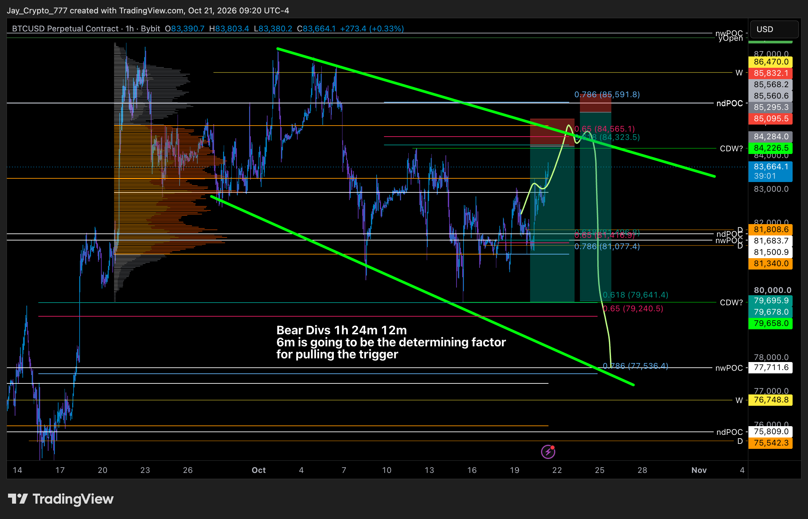
Jayson, 21/10 10:21: short ideia 1 (1h) — entradas ≈84.323 e ≈84.565, stops ≈85.096 e ≈85.592, alvos ≈79.641 / 79.240 / 77.536.
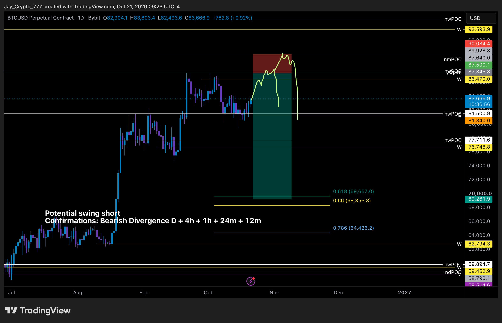
Jayson, 21/10 10:23: short swing (1D) num falso rompimento — entrada ≈87.500, stop ≈90.034, alvo ≈69.262.
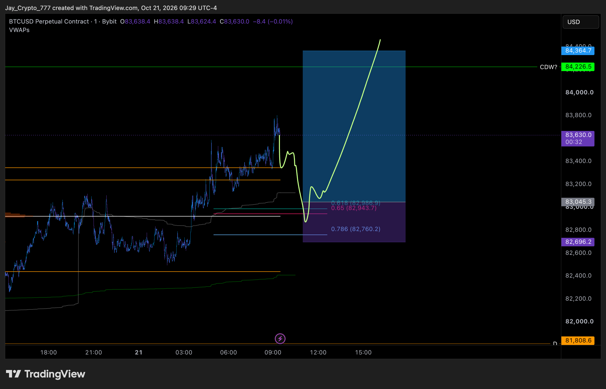
Jayson, 21/10 10:30: scalp long (1m) — entrada ≈83.045, stop ≈82.696, alvo 84.225 (já atingido).
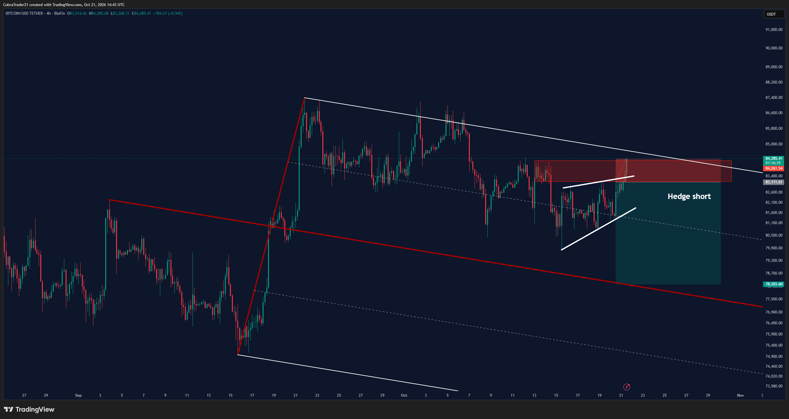
Cobra, 21/10 11:43: o resto do hedge short foi estopado (stop 84.261).
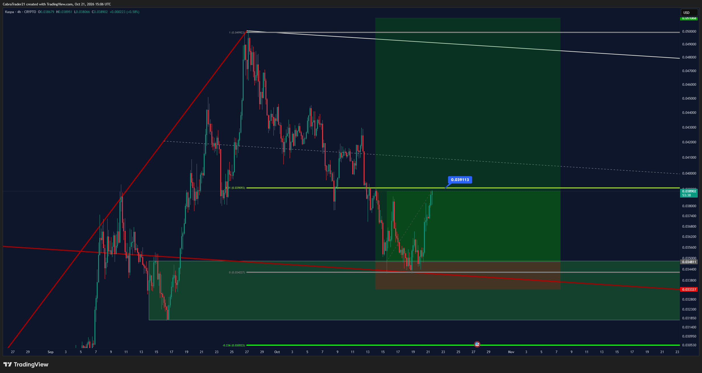
Cobra, 21/10 12:06: KAS (4h) — realizar ~15% em ≈0,03911.
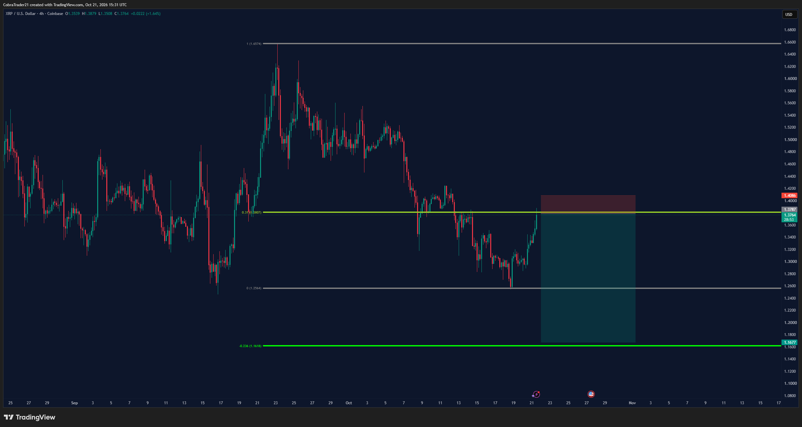
Cobra, 12:31: XRP short (4h) — entrada ≈1,378, stop ≈1,409, alvo ≈1,168.
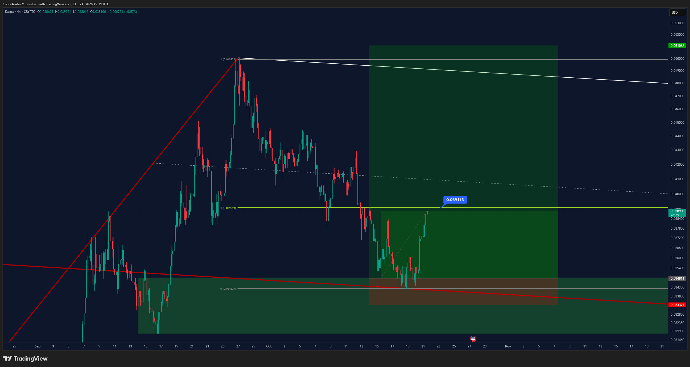
Cobra, 12:31: KAS bateu o alvo de ~15% (≈0,0391).
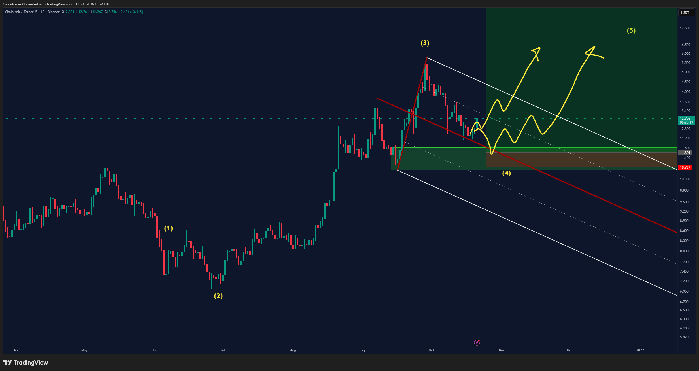
Cobra, 15:24: LINK 1D — talvez já tenha feito fundo; onda 5 projetada para ≈16–17.
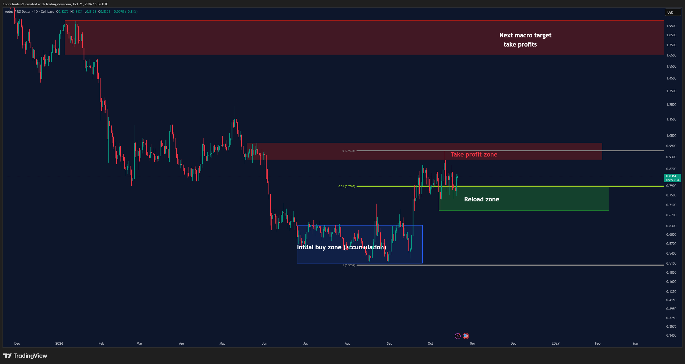
Cobra, 15:06: APT 1D — zonas de compra, recarga e alvos.
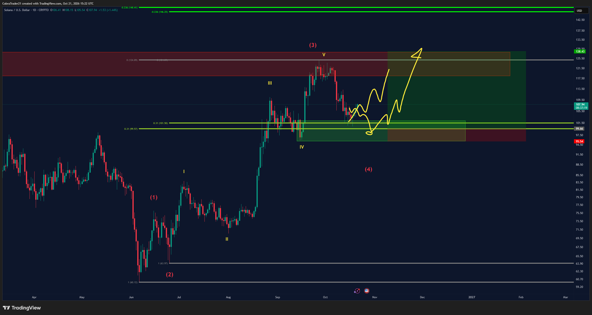
Cobra, 12:22: SOL o estopou e subiu; zona de long ≈99,7–101,5, alvo ≈125–129.
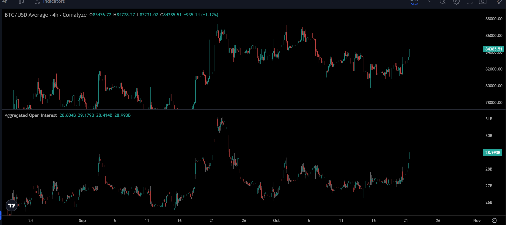
Cobra, 12:21: BTC 4h + open interest — "mercado muito altista", único sinal ruim é o OI alto.